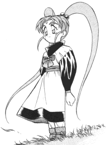

How to Write a FanFic |
If you ever wanted to write a fan fic but aren't sure how to start, hopefully this may help. The following document has been written and copyrighted by David "Kthardin" R. Nolen (Kthardin@geocities.com). |
Forward
Hmmm...how to write a fic. A very point-of-view type subject. There are as many ways to write a fic, as well as ideas in which to write, as there are stars in the sky. No single way can be said to be correct, best, or even acceptable. What one may think is bad, another might think is the best thing they have ever read. So if you think I'm going to tell you what to write; FORGET IT! I may have my opinions, but I don't tell people what to write. However, there are certain courtesies which one should keep in mind, as well as ways of perhaps making your fics be the best they can. Assuming you wish to utilize those tools available to you. So without further ado, I shall explain what I'm talking about.
The Disclaimer
Folks, this is Fanfic. This means we are taking characters and situations from one story and incorporating them into one of ours, completely without permission. The characters and situations in question are copyrighted. So that means...WE DON'T OWN THEM. Someone else does, therefore out of courtesy (and so those of us who know better don't think you're a total dope) you include the disclaimer (usually at the top or the bottom of the fic, to make it abundantly clear) that basically says something to the effect of: I don't own these characters, someone else does. I didn't create either them or their situations, someone else did that too (It's a good idea to give these people names, but is not entirely necessary). This story comes entirely from my imagination, and is not, nor intended to be, cannon. The last stipulation is usually a pleading for the owners not to sue, because most of us are broke most of the time ^_-. The exact wording of the Disclaimer can be just about anything you want; from highly technical legalese, to having a stand up comedy routine of sorts, telling everyone the above information.
For Example
From The Magician's fic, "The Darkest Hell"
Disclaimer : I don't own all of these characters, well, maybe one or two, but as for the rest of them, they are property of AIC and Pioneer. I am NOT looking for any type of lawsuit or anything of that nature. Besides, such efforts are futile, because there is absolutely no way that I can pay off ANY amount of money, for I am flat broke. Hey, you can't squeeze blood from a turnip...
Or from: Chris Davies' Mega-Xover fic "Together Again"
It's disclaimer time:"Sailor Moon" was created by Naoko Takeuchi and brought to North America by DIC. "Ranma 1/2" was created by Rumiko Takeuchi and brought to North America by Viz Communications. "Tenchi Muyou" was created by and Masaki Kajishima, and was brought to North America by Pioneer LDC. "Kimagure Orange Road" was created by Matsumoto Izumi and brought to North America by AnimEigo and AD Vision (who are nipping at Bob Woodhead's heels elsewhere, too). "Oh My Goddess" and "You're Under Arrest" were created by Fujishima Kosuke and brought to North America by AnimEigo and Dark Horse Comics. "Mamono Hunter Yohko" was created by Miyao Gaku and brought to North America by AD Vision. "Fushigi Yuugi" was created by Yuu Watase. "Gojiira" was created by Shigeru Kayama. This story, while incorporating elements of films and magazines held under copyrights by others, is copyright 1998 of Chris Davies.
Nobody sue me okay?
Stuff like that. Also this is usually the place where Acknowledgements to people who have helped you make this fic are. It's a good thing to give credit where credit is due. Especially to the original creators of the series, that's always a good thing.
Originality
When I say originality, I mean, try not to steal anyone else’s ideas or fic titles without permission. True, this is not copyrighted, and as such we have no legal claim to our work. This, again, is where professional courtesy comes into play. DO NOT TAKE ANOTHER'S IDEA'S FOR A FIC AND MAKE IT YOUR OWN! There is a fine line between inspiration, and outright plagiarism. Take for example the idea Ryouko gets Tenchi (Ryouko’s Love and A Reevaluation of Events are two examples). A simple idea, and lot's of stories have been written to explore that thought. Another example would be Tenchi goes and tells off Aeka and Ryouko (Tenchi Chronicles, and What if? Are two examples). Again a simple idea, and quite a number of stories have been written to explore the idea. However, take for example this: Washuu's child of 20,000 years ago suddenly shows up, becomes Tenchi's best friend, and wins the heart of Tsunami/Sasami. A very specific idea, and if one person writes about it, another person doing itagain later is just ripping off his idea. Which is not to say it can't be written about again, it's just that one should get permission first. This example was taken from a fic called 'Honor and Glory' where the author e-mailed the author of another fic ('Heaven and Eternity') and asked for that author's permission to use a few of his concepts and ideas. Permission, in this, case was granted.
However one runs a risk when one does that. Over plagiarism, even with permission, can lead to the audience to be 'turned off' by the fic, for the simple fact that, that idea and story with those exact same type of lines and structure HAS BEEN DONE BEFORE! Also the use, without permission, can lead to being banned from being posted on anyone's web page, but your own.
Format
When I say format I don't mean, format in which a story is written. That is, as it should be, up to the author. However, when I say format I mean how the fic is set up as software and presentation. The best, and universal way (for all operating systems can see ASCII), is to write your fics in simple Text format. Not everyone can see Microsoft Word Docs or Rich Text Format (RTF) files. Also, the text should be formatted to only about 80 characters per line. This is so the text does not scroll off the screen, and the reader has to waste his time going side to side as well as up and down. It is very jarring, and hard on the eyes. One way to do this is to hit RETURN or ENTER after every 80 characters. The automatic carriage return of some word processing programs CANNOT BE RECOGNIZED! So you must do it manually. Another way is if you word processing program can do this, is save the file as TEXT WITH LINE BREAKS. The program puts the RETURN in for you at the end of each line. This will enable maximum readability for your fic. In other words we need to be able to read this on a 286 KayPro running WordStar 2.0 as well as a Pentium 2, 350MHZ Machine w/ 64 MB of RAM with all the goodies, running Windows 98 with it's kernel replaced so you are really running Lightstep; on any of it's many word processing programs.
Prereaders (optional)
Proofreading is a must for any fic. However it has been found that the individual author cannot always effectively proofread his own work. That's where prereaders come in. Prereaders are the guys you send your fics to, to spot errors in your story that you, yourself cannot. This is totally optional, and not everyone uses them. However they are useful in that they spot grammar and spelling mistakes. They also spot errors in continuity of your story (be it plot related or you were switching tense gratuitously). Basically they are the fanfic equivalent of an editor. They can help make a fic more readable, and more enjoyable to the audience, but most importantly to yourself. They can also present new ideas and concepts to you, that could take your fic, and imagination, to a whole new level. They are not cure-alls to all the 'ills' in a fic, they are only human, like yourself. They are very useful, however, and are recommended highly. How to get one? Ask around. Hell, even your little sister or mother can be one. They can be anyone you want.
Place to Post
You can post to pretty much anywhere someone or yourself has the means and web space. For the best place to put your Tenchi FanFic of all types is GenSao's Archive of Tenchi FanFic! The best on the net. If you can't find it here you most likely won't find it anywhere else, he has almost all Tenchi fics. Here you will most likely get the most exposure to the widest audience range. Another Place to get major exposure is the Fan Fiction Mailing List. There you can read fanfic of all types, and post fanfic of all types. This will get you even more exposure than posting it at GenSao's archive. And there are other ways...you can set up your own page on the net and post you fic's there. Add a link to your page to the Anipike Directory of Fanfics. You can also send your fic to the recreation.arts.anime.creative (RAAC) newsgroup. There are many many ways to get people to read your fics.
Have fun!
This is fiction folks. This is what we do in our free time, for recreation and shear enjoyment of building something. If you don't like what you are doing, quit doing it. I mean, sure, we feel very vehemently about some topics, and have heated discussion about them, sometimes even knock down, drag out, throw in the ditch, watch 'em rot for a few weeks fights, but this is all for fun. If you're not having fun, if you don't like it, discontinue it.